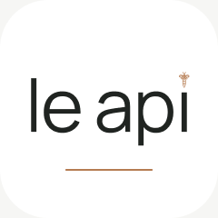
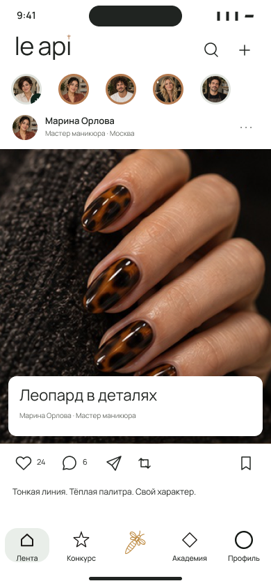
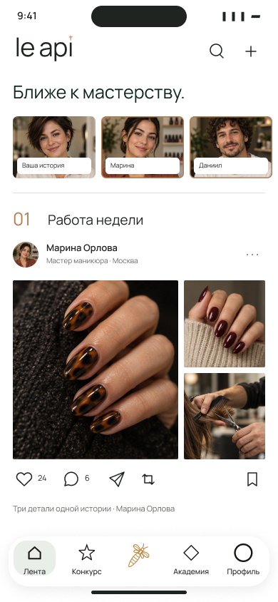

Знак остаётся.
Подача становится смелее.
Десять новых иконок на основе выбранной 01. Десять новых лент из ваших направлений 09 и 10: фотография крупно, контактные листы, серии и прозрачные элементы управления.
Ваш выбор из первого раунда — посмотреть основу



01 / Полное имя. Разная оптика.
Сохраняю написание, рисунок букв и пчелу. Исследую поля, масштаб, обрамление и глубину. Под каждым вариантом — 60 и 40 пикселей. Все номера ниже относятся к новому раунду.
Стекло здесь — визуальный эскиз послойной иконки. После выбора слои отдельно готовятся для Icon Composer; эти изображения не являются уже установленными системными иконками. У 02 намеренно смещён центр, у 07 рамка заметнее имени, у 08 сложнее конструкция — это компромиссы для сравнения.
02 / Работа — главный акцент.
Разные способы рассматривать мастерство: один кадр, диптих, плёнка, контактный лист, последовательная лента и обзор коллекции. Пять основных разделов и отдельное создание публикации сохраняются.
Каждый экран собран из редактируемых слоёв Figma. Фотографии и имена демонстрационные. Под вариантами указаны логика взаимодействия и слабое место: неподтверждённый жест или сложный сценарий не выдаётся за готовую функцию.
03 / Сравните два направления.
Выберите любые два экрана. Можно сравнить композицию на одном содержимом и открыть каждый макет отдельно.
04 / Больше пространства — больше контекста.
Для широкого окна предлагаю боковую навигацию и одновременный просмотр работы, автора и деталей серии. На обычном телефоне это остаётся последовательным просмотром.
Это иллюстративный макет 890×626 для сценария широкого окна. При изменении ширины должны сохраняться публикация, кадр серии и сессия. Размер макета не объявляется фактическим UIKit-размером iPhone Duo; реализация и проверка на устройстве — следующий этап.
05 / Стекло, которое помогает.
Панели управления используют эффект GLASS в Figma. Основные подписи — на стабильной поверхности. Ниже один экран на более светлом фото: со стеклом и в непрозрачном режиме.
Иерархия не меняется вместе с материалом.
Навигация, подпись, история и действия остаются на месте. Для медной пчелы в навигации добавлена светлая опорная поверхность. В 09 изумрудный док выполнен сплошным, чтобы сохранить контраст.
Движение: мягкое изменение состояния без пружинящих прыжков; при Reduce Motion — без перемещения. Стекло в макете показывает направление, а реальное преломление и скорость проверяются после нативной реализации.
Опора — функциональные материалы Apple и акцент iOS 27 на читаемости: Materials, iOS 27. Послойная иконка: App icons. Широкий формат: iPhone Duo.
Мой критический отбор.
Иконки 01 / 05 / 10
01 — самый спокойный объём. 05 — узнаваемый зелёный торец без зелёного фона. 10 — более крупное имя и редакционный характер. 06 интересна тактильностью, но требует осторожности: лишний объём может спорить с системным освещением.
Ленты 02 / 04 / 07
02 — наиболее цельная связка с вашим контактным листом. 04 — самое выразительное развитие серии с горизонтальным листанием. 07 — хорошо объясняет устройство публикации и позволяет быстро рассматривать детали. 01 — самый смелый вариант, но у него больше наложений на фотографию.
Это этап выбора визуальной системы. Приложение, аккаунты, данные и пилотный вход не менялись. Следом выбранное направление проходит состояния, масштаб шрифта, реальные жесты и проверку Release — до замены текущего интерфейса.